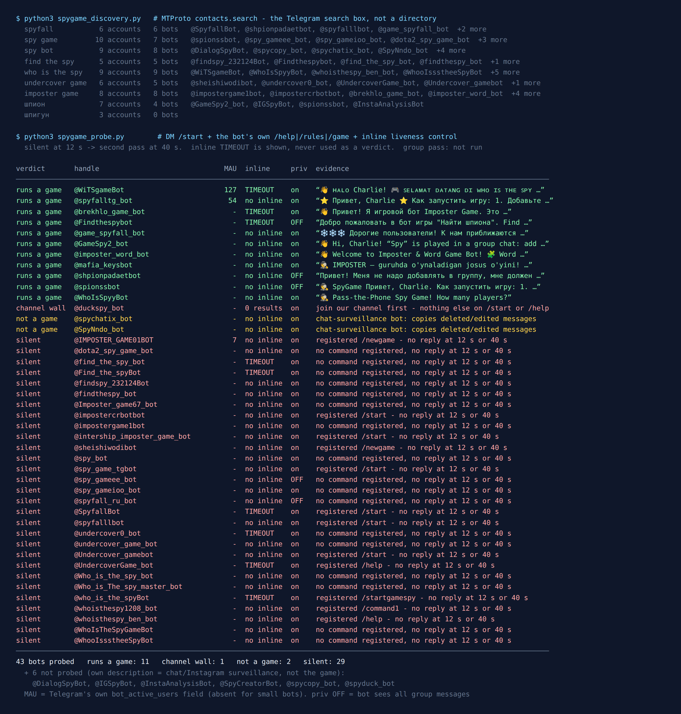

Telegram Spy Game Bots: 49 Tested, 11 Actually Play
Spy is the rare party game that works better in a chat than at a table. Everyone gets the same secret location except one player, the spy, who gets nothing. People take turns asking each other questions about the place, and the spy has to bluff along without knowing where they are. The board game version is Spyfall, a 2014 card game for three to eight players by Alexander Ushan (Wikipedia). On Telegram the same game runs under half a dozen names: Spyfall, Spy, Find the Spy, Who Is the Spy, Undercover, Imposter.
The hard part is the dealing. Somebody has to hand out the location privately, make sure nobody sees the spy card, and run the vote. That is exactly what a bot is good at. So on the night of 18 September 2026 I asked Telegram’s own search which spy game bots exist, messaged every one it returned, and wrote down what each one did.
49 bots came back. 11 run a spy game. 29 never answered, at twelve seconds or at forty. And the single most popular “spy” bot the search returned is not a game at all. It has 304,061 monthly users, and what it spies on is your private chats.

How the list was built
Directory sites keep a bot listed for years after its server stops. I learned that on general game bots, so this list came from the platform instead. The Telegram search box runs an API method called contacts.search, and it only returns accounts that exist right now.
I fixed nine queries before measuring anything: spyfall, spy game, spy bot, find the spy, who is the spy, undercover game, imposter game, and “spy” in Russian and Ukrainian (шпион, шпигун). The Russian name is on the list because a large share of Telegram’s spy players play it as “Шпион”. The Ukrainian one returned zero bots, which is a small finding in itself.
Each bot then got the same test, from the same account, the same way I tested Mafia bots and word game bots earlier this week:
/startin a private chat, twelve seconds to reply.- The bot’s own help, rules or game command, taken from the command list it registered with Telegram, never guessed.
- An inline query, recorded but not used as a verdict. On the word game test, bots that were plainly alive still timed out on it.
- Anything silent got a second pass at 40 seconds before “silent” counted. None of the 29 woke up.
What I did not do is play a round in a group. My test account cannot create groups, and I was not going to add 49 strangers’ bots to somebody else’s chat. “Runs a game” below means the bot is up and explained a working game to me.
The biggest “spy” bot watches your chats
The query spy bot returned eight bots. Not one of them was a game. Six said so in their own descriptions before I sent anything, so I did not message them:
@DialogSpyBot: “if someone deletes a message, the bot will send you its copy”, plus edited messages and timed photos. Telegram counts 304,061 monthly users.@SpyCreatorBotbuilds mirror copies of@DialogSpyBot.@spyduck_bot: “I watch deleted, edited and hidden messages.”@spycopy_botsaves photos, videos and files from channels that have forwarding turned off. 17,299 monthly users.@IGSpyBotand@InstaAnalysisBotare anonymous Instagram story viewers.
Two more only showed their hand when I pressed Start. @SpyNndo_bot promised to notify me “if your contact edits or deletes a message” and to download photos sent with a timer. @spychatix_bot keeps copies of messages “even when the message was deleted for everyone”, and had already switched on a seven-day trial for me.
Both explain how they get in: through Telegram’s chat automation setting, the feature that lets a business account connect a bot to answer private chats on its behalf. Telegram introduced it for Telegram Business, which it made free for Premium subscribers (telegram.org/blog/telegram-business), and the Bot API does deliver edited_business_message and deleted_business_messages updates to a connected bot (core.telegram.org/bots/api). A feature built for a shop’s auto-replies works equally well as a recorder of what your friends deleted.
For a game night this matters for one reason. If you search “spy bot” in Telegram, those are the first results you get. The largest actual spy game bot here, by Telegram’s own count, has 127 monthly users. The largest chat-watcher has 304,061. That is about 2,400 to one. Search for the game’s name, spyfall or find the spy, not for “spy”.
Two games under one name
The eleven working bots split into two different games, and it is worth knowing which one you want before picking a bot.
Location spy is Spyfall. Everyone but the spy knows the place, and the questions are about the place: “would you dress up to come here?” @GameSpy2_bot sent the cleanest rules of the night, in English: everyone gets the same location, you take turns asking questions, “a round lasts 3 min, then voting starts”, and “the spy wins by guessing the location or surviving”.
Word spy is the version sold as Who Is the Spy, Undercover or Imposter. Everyone gets a secret word, and the spy gets a similar but different word, or none at all. Players describe their word in turns without saying it. @WhoIsSpyyBot names both modes in its description: “Classic — Spy gets a similar but different word” and “Blank — Spy gets no word at all”.
The word version is harder for the spy in Classic mode, because the spy does not even know they are the spy. Location spy is easier to teach to people who have never played. For a first round with new people, I would start with location.
The ones I would try first
@GameSpy2_bot for an English-speaking group. The rules came back in plain English within twelve seconds, the description promises about five minutes a game, themed location packs, and your own packs. It keeps Telegram’s default privacy mode on, which means it only sees commands and replies meant for it, not your conversation. There is a Premium button in the menu, so expect upsells.
@WhoIsSpyyBot if you are all in one room. Its /start reply in private was “Pass-the-Phone Spy Game! How many players?” with buttons from three to eight. That is a mode none of the others offered: one phone, passed around the table, no group chat needed at all. It also speaks Farsi, which tells you where it came from.
@shpionpadaetbot if you do not want a bot in your group. It is the only one that said outright, “You don’t need to add me to a group; every player has to message me privately.” One player becomes the host and creates a room, the others join with the room’s password, and the host starts each round. You can also add your own locations by typing “add Hogwarts School” and give them pictures. It is Russian-only.
@spionssbot or @spyfalltg_bot for a big Russian-speaking group. These two answered with the same onboarding text almost word for word: add the bot, make it admin, open a lobby, “from 3 to 35 players”. Same template, probably the same maker. @spyfalltg_bot is the one with a Telegram user count (54). The catch is the admin rights. @spionssbot spelled out what it needs: pinning and deleting messages, invites and restrictions. It also has privacy mode switched off. Coins, a shop and a paid VIP tier come with it.
Want a round without adding a bot?
The free Party Game runs inside Telegram itself, so there is nothing to add to your group, no admin rights, and nothing reading the chat: Would You Rather, Never Have I Ever, Truth or Dare and quiz rounds, from two players up.
Open the Party Game No Telegram? It runs in a browser too: charliemorrison.dev/party-gameThe rest of the working eleven
@game_spyfall_botis played entirely in private chats, and Telegram’s own flag on the account confirms it cannot be added to groups at all. It asked for my name to register. Its first message, on 18 September, was an advert for a New Year Secret Santa bot, which says something about how often it is updated.@Findthespybotis a Russian-language host built on the Chatforma constructor. It answered/startproperly and replied to/helpwith “I’m a bot, I don’t understand you”. It has privacy mode off.@imposter_word_botis English, runs the Imposter game in groups and a separate word puzzle you can play alone in private.@brekhlo_game_botis a Russian Imposter host with a shop, coins and hints.@WiTSgameBotis Indonesian, has the highest Telegram user count of any real game here (127), and sells emoji, symbols and coins from its first screen.@mafia_keysbotis, despite the Mafia handle, an Uzbek-language Imposter host with a 45-second lobby.
Names that do nothing
29 bots sent nothing, twice. They include most of the obvious handles: @SpyfallBot, @spy_bot, @Who_is_the_spy_bot, @UndercoverGame_bot, @findthespy_bot. @SpyfallBot is the saddest one. Its description is still a good pitch (“Duration: 2 to 10 minutes. Players: 3 to 10”), and it did not answer /start in twelve seconds or in forty.
A dead bot keeps its name, its picture, its description and its command menu. From the chat window nothing tells it apart from a slow one, which is why the first thing to do with any bot on this list, including the ones I recommend, is send /start and wait.
One more did answer and still did nothing useful: @duckspy_bot replied to both /start and /help with only a demand to join its channel first. I did not join, so I cannot say what it does.
Does a spy bot need to read your group?
This is where spy differs from word games. In Crocodile or word chain, the guesses are ordinary messages, so the bot has to read the whole chat. Telegram’s documentation explains why: a bot in privacy mode only receives commands meant for it, replies to its own messages, and a few service messages, and switching privacy off lets it “receive all messages like an ordinary user” (core.telegram.org/bots/features).
A spy game does not need that. The bot deals the roles privately, runs a timer, and counts a vote made with buttons. The questions and answers are for the players, not the bot. And indeed, of the eleven working hosts, eight keep privacy mode on. That includes @GameSpy2_bot, which runs the whole game in a group without reading your messages.
So if a spy bot asks for privacy off and a full set of admin rights, you are allowed to ask why. In a group made for games it hardly matters. In the family chat or the work chat, it is a stranger’s server that can read every message and remove people.
How I would pick one tonight
- Search the game’s name, not “spy”. “Spy bot” returns chat-watchers.
- Pick the game. Location spy is easier for beginners; word spy (Undercover, Imposter) is sneakier.
- Pick where you are. Same room, one phone:
@WhoIsSpyyBot. Separate phones, no bot in the group:@shpionpadaetbot. A group chat in English:@GameSpy2_bot. - Send
/startin private and wait fifteen seconds. 29 of 43 bots I messaged never answered at all. - Read what it asks for. A spy game does not need to read your chat. Give admin rights only in a group made for games.
If you are planning the whole evening, the game night guide covers what breaks first in a busy chat, and the party games list has games that need no bot at all. Spy players usually like Mafia too: same bluffing, bigger groups, longer rounds.
For a group that would rather not add a bot
The Telegram Party Pack is 255 group-chat prompts — 45 Never Have I Ever statements, 30 Would You Rather dilemmas, 110 Truth or Dare — as copy-paste text and ready-made poll blocks. It has no spy game in it. It is for the nights when you want the chat to play without handing a stranger’s bot admin rights.
Get the pack — $9.99 Or see which word game bots still answer.What I could not test
No round was played to the end. A bot can explain its rules perfectly and still stall on the vote. I opened games; I did not finish them.
Silent is not dead. Some of these bots may ignore private messages on purpose and work fine in groups. From the outside I cannot tell those from switched-off ones.
The twin is inferred. Near-identical onboarding text is strong evidence that @spionssbot and @spyfalltg_bot share a maker. It is not a statement from the maker.
Bots change fast, so the date at the top matters. Fifteen seconds of /start beats any list, this one included.